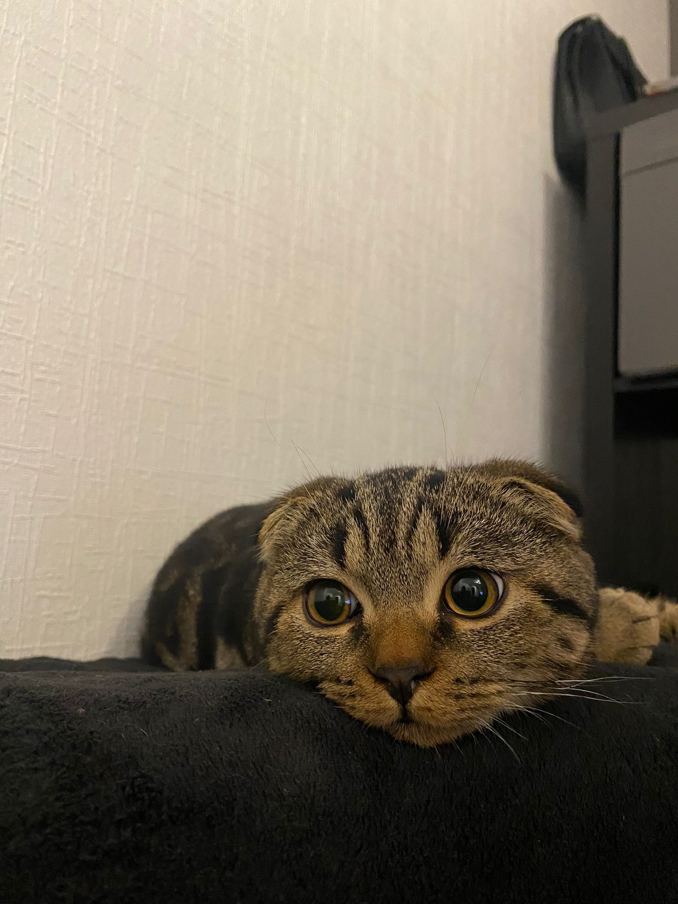
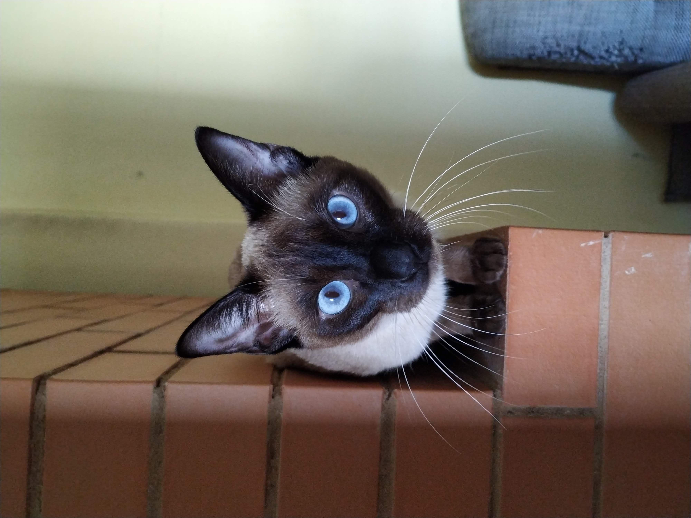

Par mums
Komandas dalībnieki
Galvenais kaķis
Vārds: Neo
Vecums: 2
Dzimums: Kaķis
Komentārs: Šorīt cilvēks atkal aizmirsa manu galveno likumu – es ēdu pirms viņa kafijas! Bet nu labi, es viņam piedevu, jo tas mazais gurķītis no brokastu šķīvja bija garšīgs. Protams, viņš teica: "Neo, tas nav priekš tevis!" Bet es zinu – viss, kas uz galda, ir priekš manis. Tas ir likums. Vēlāk es atkal izglābu pasauli. Logā ieraudzīju to nejēdzīgo putnu, kas uzdrošinājās manā teritorijā atlidot. Es, protams, metos pret logu un biedēju viņu. Cilvēks smējās, bet viņš nesaprot, ka es esmu varonis.Vakarpusē mans cilvēks beidzot bija sapratis, ka es esmu karalis. Viņš skrāpēja manu zodu tik labi, ka es gandrīz aizmirsu par to, ka viņš no rīta kavējās ar ēdienu. Gandrīz. Un tā ir mana diena. Mans moto: Murrrrrrr
Galvenais kaķis
Vārds: Late
Vecums: 6
Dzimums: Kaķene
Komentārs: Murrr... Vai jau rīts? Nē, pārāk agri. Es pagriežos uz otru sānu un turpinu savus sapņus – sapņus par to, kā kādreiz valdīšu pār visu pasauli. Bet kas tas? Cilvēks kustas. Ak, cilvēk, tu droši vien esi nomodā, lai tikai piepildītu manas vajadzības? Protams, kā pirmā lieta man jāveic rīta inspekcija – vai ēdiena bļoda ir piepildīta. Nopietni? Pustukša?! Šis ir nepiedodami. Es sēžu blakus un skaļi murrāju, kamēr cilvēks saprot, ko es vēlos. Kad saule noriet un visi kļūst mierīgi, es iekārtojos savā iecienītākajā vietā – uz dīvāna, tieši tur, kur cilvēks grib apsēsties. Tā ir mana teritorija. Es cieši skatos uz viņu, un viņš, saprotot, cik es esmu īpaša, atdod man vietu. Mans moto: Murrrrrrr